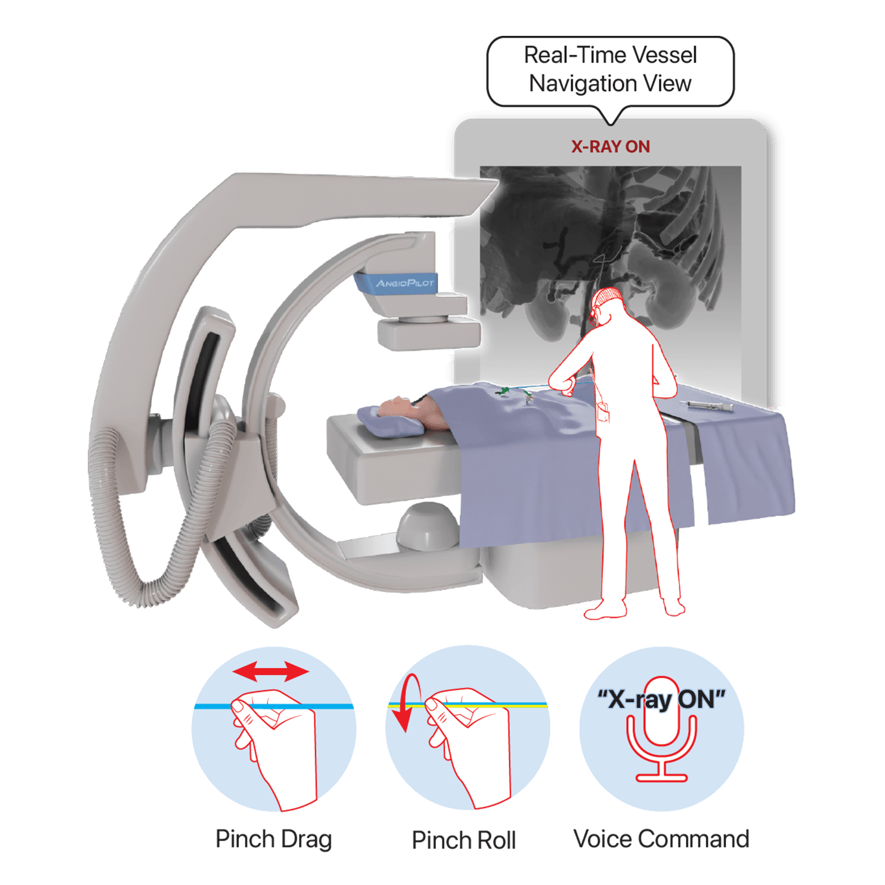
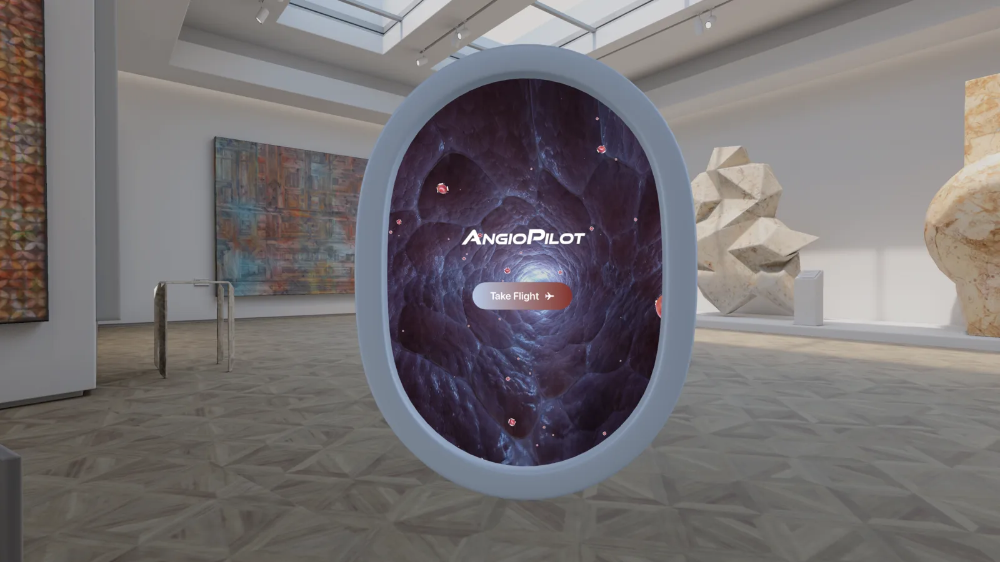
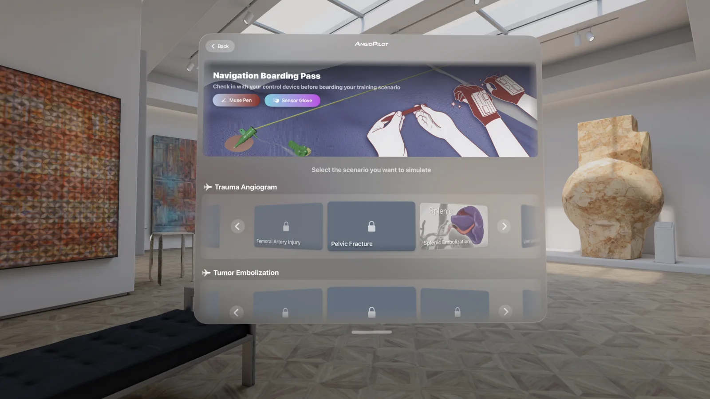
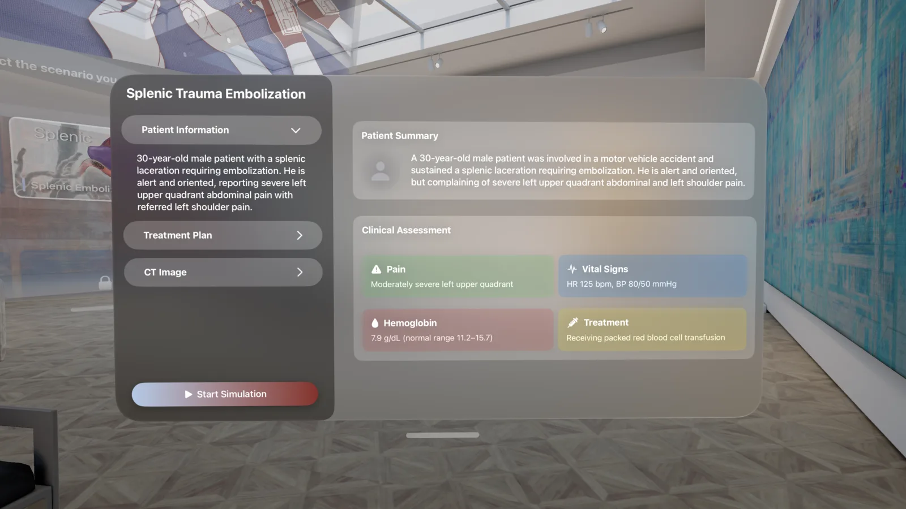
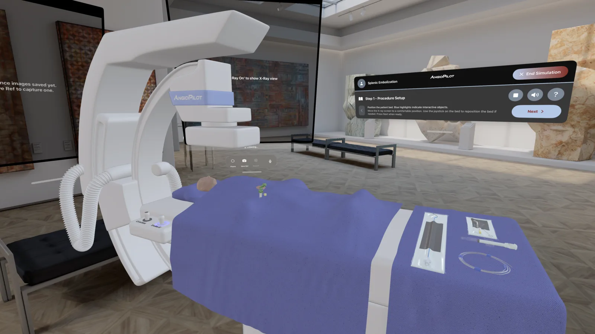
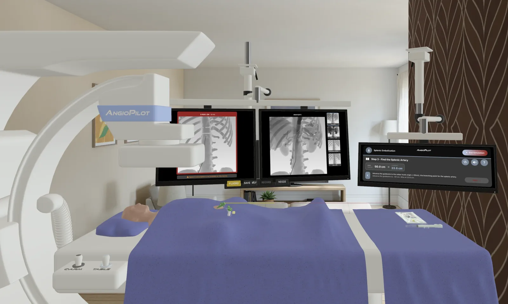
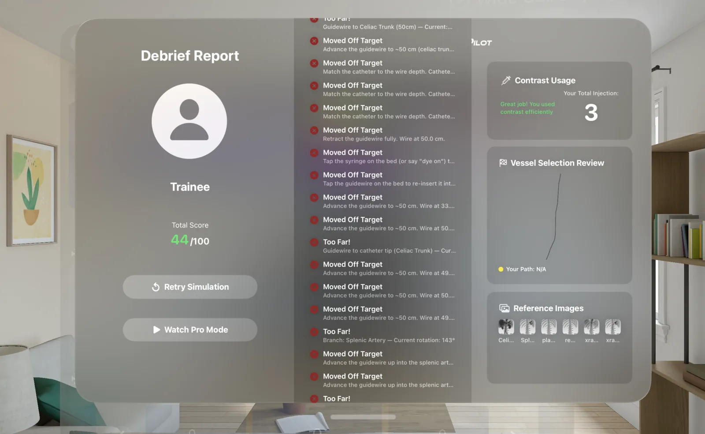

Scenario-Based Vascular Catheterization
Simulation Training Tool
Practice the full procedure and clinical decisions, and get scored based on our performance in virtual space.
Overview
Angiopilot is a scenario-based vascular catheterization simulator designed to familiarize trainees with real-world procedures. AngioPilot combines responsive X-ray visualization with intuitive catheter manipulation and step-by-step guidance, enabling safe, accessible, and repeatable skills training.

Why splenic embolization needs a new kind of practice
Our scope
Our goal is integration into real-world medical education.
- Precise control of the catheter and guidewire
- Reading real-time imaging to identify landmarks, confirm catheter position and select the correct vessel
- Efficient runs with minimal X-ray exposure and contrast use
- Step-by-step guided narration
- Highlighted targets and actions
- Immediate feedback
- Progression gated by correct actions
- Reduced guidance
- Independent decision-making
- Errors allowed with a structured debrief
- Performance-based assessment
Watch Demo
Six checkpoints from takeoff to debrief.






Video walkthrough
Book Demo
Two boarding days only — Tuesday, September 22nd and Wednesday, September 23rd, 2026. Pick a time below.
Contact Us
For questions, research collaborations, please share your details below. Our team will be pleased to follow up with you.
Contact Us